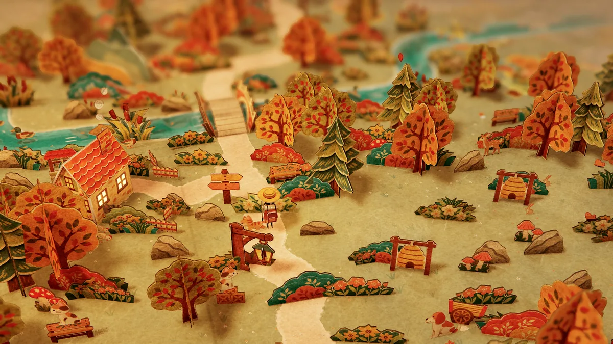
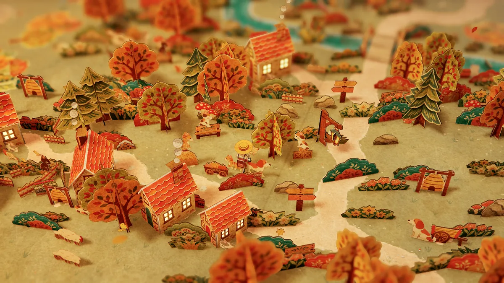
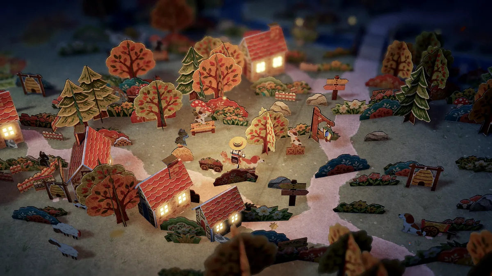

秋天的纸叶子堆在浅米色的书页上，一条小路分向木桥和路牌。近处有一栋亮着窗的小屋、一口井、几朵蘑菇；稍远处，戴草帽的小小旅人正走在岔路口。这是仓库 README 里的 hero 截图，不是真人照片。作品叫 Papertrails，作者是 Shikhar（@xikhar）。仓库以 MIT 发布，本页有导读、作者帖串的全文中译、README 全文中译，以及许可证原文。
screenshots/。
这是一件什么作品
Papertrails 是一件可以在浏览器里打开的步行小品。试玩页标题就是这个名字，说明写着：「Explore an endless paper world. Wander through handcrafted villages, forests, and winding trails in Papertrails.」（探索一个没有尽头的纸世界。在手作的村子、树林和弯路上走。）package.json 里的描述更短一些：「a paper traveller walks across an endless pop-up book (Three.js walking toy)」（一个纸人旅者，走在一本没有尽头的立体书上；Three.js 步行玩具）。版本号是 0.1.0，依赖 three ^0.187.0，用 Vite 构建。试玩地址是 xikhar.github.io/papertrails，源码在 github.com/xikhar/papertrails。
作者在 2026-11-17 21:27（新加坡时间，UTC+8）发帖介绍它：一个会在你身边展开的无尽纸艺世界，用 Fable 5.2 和 Opus 5.5 做成，在浏览器里用 three.js 运行。工具链是作者自报 ⚠️。他在同一条帖串里公开了完整提示词和工作步骤，稍后又补上了仓库和试玩链接。
页面底部的操作提示是：WASD 或点击行走；Shift 奔跑；Ctrl 慢走；Tab 打开地图；N 切换夜晚；M 开关音乐；V 切换视角。本库读取了试玩页和公开资源清单，但没有进入世界里完整走一遍 ⚠️。
它是怎么做出来的
作者把流程写成六步，并配了过程图。下面按他的说法综述；提示词全文见后。
- 先写一份提示词，把交付标准、工作方式和工具写清楚。提示词里的项目名还是「Pop-up Atlas」，后来发布时改成了 Papertrails。试玩页里的画布 id 仍是
atlas。 - 智能体用 GPT Image 生成概念帧，并收集一些真实立体书的照片，再量它们的颜色、边缘和光线。过程图里出现了多张参考照片的文件名，例如曼谷立体书跨页、剪纸卡片和建筑卡纸边缘；这些是第三方照片，本页不转载。
- 每个部件交给一个子智能体，另设盲评，对照参考来比较成品。全部印刷画被做成一张图集，再裁到带铰链的纸片上。
- 再用 GPT Image 做风格手册，生成 15 种生物群系和天气参考。作者接着写：它们变成了沙漠、雪地、花树和松林，并有白天和夜晚。公开构建里能看到
desert、snow、blossom、pinewood和village这些名字；「15 种」的完整名单未见公开枚举 ⚠️。 - 选出一张图作为具体的风格锚点，再为每个生物群系生成「金样」目标。动物也用同样的办法设计。公开脚本里出现了
desert_fox和snow_hare。 - 然后循环：渲染，比较，批评，修改。作者贴出了同一镜头在各轮里的对照，以及最终落到哪一步。
作者在回复里补充：地形是按初始种子、用现成的素材套件程序化生成的，不会事先存下一张地图；地图会随着探索不断变大。有人问性能，他说「只是平面素材，不至于带来多少性能问题，也不需要复杂优化」。公开构建里确实有一张印刷图集，同时也提供 models/tiles.glb（HTTP 头显示约 6.1 MB）和 models/traveller.glb（约 85 KB）。本库只核了对它们的引用和体积，没有打开模型内部 ⚠️。更稳妥的理解是：场景由带贴图的纸片几何拼成，而不是没有三维文件。他后来说，目前离开道路的走法还不理想，碰撞也可以做得更好。
关于用量，作者对 @Ananth7e 说：这一次大约用掉了 Ultra 套餐里每周 Fable 额度的 50%，再加上一些普通的 Opus 额度；他是边做边改风格的，如果一开始就有明确的最终参考，会更省。这些都是自报，未见账单 ⚠️。他同时说明，上一款游戏（同作者的 Sumiro）是从视频参考开始的，做法不同；那一次用了多少额度，他已经记不清了。
提示词里计划用 Blender 做带铰链的地块和旅者并导出 glTF，用 Codex CLI 的 imagegen 出概念图和纸纹理，用 Web Audio 做程序化纸声。发布帖则写 GPT Image、Fable 5.2 和 Opus 5.5。公开构建里没有独立的 .mp3 / .ogg 文件，但有 Web Audio 的音乐与折叠声，并在捡起纸片或点亮灯笼时触发提示音。音乐具体谱写方式 README 未写 ⚠️。


原帖串全文
以下为作者英文原帖串的中文译文。主帖发布于 2026-11-17 21:27（新加坡时间，UTC+8）。附件是一段约 54 秒、1920×1080 的视频，请到原帖观看。
Papertrails：一个会在你身边展开的无尽纸艺世界。
用 Fable 5.2 和 Opus 5.5 做成，在浏览器里用 three.js 运行
完整提示词和工作步骤见下。
作者：Shikhar（@xikhar）。原帖附视频，点击观看。
自回复一（21:27）：
先从这份提示词开始。把交付标准、工作流程、工具等等都写清楚。
提示词写在一张截图里。下面按图中英文转写并中译。标题是「The original prompt」。
用 Three.js 做一个能在浏览器里走的三维玩具，名字叫「Pop-up Atlas」。
参考
还没有。先用 imagegen 生成 4–6 张概念帧（移轴效果的纸艺透视模型，小小的纸人旅者，地形从打开的书里折起来，暖色的灯笼光）。再收集真实立体书和纸艺透视模型的照片。这些就是对照目标。外观和能摸到的纸感都要对上。细节
一个小小的纸人旅者，走在一本摊开、没有尽头的立体书上。前方的地形会从平面书页里折起来：带铰链的纸片（山丘、树、房子、桥、河）像弹簧一样升起，略微越过目标位置，再轻轻晃几下停住。用波函数坍缩挑选纸片，让相邻的总能接上。走过的纸片再折回去，重新躺平。外观：哑光卡纸，有限的暖色调，看得见纸边和纸纤维，一层层剪纸剪影，层与层之间有软阴影，高机位移轴镜头，景深很浅，主光暖、辅光冷。每一次折叠都有一声轻软的纸片「啪」声，音高有变化。操作：WASD 或点击行走，镜头平滑跟随。不要做成像真实设备那样的界面，不要外部品牌素材。工具
Blender（带铰链轴的地块模型、旅者、折叠动画、烘焙好的纸材质，导出为 glTF）。Codex CLI imagegen（概念帧、纸张纹理、印刷细节）。Web Audio 程序化纸声（或者采样，如果效果更好）。工作方式
自主进行，不要提问；把假设记下来。先研究参考，再列出带可量化目标的组件清单。每个组件一个子智能体，各自负责自己的文件，项目保持运行。每个组件都循环：单独设一个严厉的盲评，把方案和参考并排、随机左右，说出哪个更好，并给出修改。一直做到评判者无法稳定地认出原作，并且感到惊艳。还要评判折叠动作和弹簧手感、行走手感、声音、性能（中档笔记本上能稳定 60 fps）。任何改坏了的都要回退。日志只追加。用户的明确指示优先于评判者。交付
可玩的 Vite 构建和运行说明、30 秒玩法录屏、最终的并排对照和分数。
自回复二（21:27）：
智能体用 GPT Image 生成了概念帧，并收集了一些真实的立体书照片。
然后量了它们的颜色、边缘和光线。
自回复三（21:27）：
它给每个部件都跑了一个子智能体，再由盲评对照参考来比较每一次构建。
然后把全部印刷画生成在一张图集上，再裁到带铰链的纸片上。
自回复四（21:27）：
我做了几份风格手册，用 GPT Image 生成 15 种生物群系，以及天气参考。
它们变成了沙漠、雪地、花树和松林，并且有白天和夜晚。
自回复五（21:27）：
我选了一张图，作为具体的风格参考。
它拿游戏截图，为每个生物群系生成一份金色目标。动物也用同样的方式设计。
自回复六（21:27）：
然后它开始循环：渲染，比较，批评，修改。
这是同一镜头经过每一轮之后的样子，以及它最后落到哪里。
英文原文
Papertrails: an endless papercraft world that pops up around you.
Built with Fable 5.2 and Opus 5.5, runs in the browser with three.js
Full prompt and workflow steps below.
Started with this prompt. Defining output criteria, workflow, tools, etc.
Build "Pop-up Atlas", a browser 3D walking toy, in Three.js.
Reference
none yet. First generate 4-6 concept frames with imagegen (tilt-shift papercraft diorama, tiny paper traveller, terrain folding up out of an open book, warm lantern light). Collect photos of real pop-up books and papercraft dioramas. These become the target. Match their look and tactile paper feel exactly.
Details
small paper traveller walks across an endless open pop-up book. Terrain ahead folds up out of the flat page: hinged paper tiles (hills, trees, houses, bridges, rivers) rise on springs, overshoot and settle with a slight wobble. Wave function collapse picks tiles so neighbours always connect. Tiles behind fold back flat. Look: matte cardstock, limited warm palette, visible paper edges and fibre, layered cut-paper silhouettes, soft shadows between layers, high-angle tilt-shift camera with strong DOF blur, warm key light + cool fill. Every fold gets a soft paper "flap" sound with varied pitch. Controls: WASD or click to walk, smooth camera follow. No physical-looking UI, no external brand assets.
Tools
Blender (tile models with hinge pivots, traveller, fold animations, baked paper materials → glTF). Codex CLI imagegen (concept frames, paper textures, printed details). Web Audio procedural paper sounds (or samples if better).
How to work
autonomous, no questions; log assumptions. Study reference → checklist of components with measurable targets. One sub-agent per component, each owns its files, project stays running. Loop on every component: separate harsh blind critic, A/B side by side vs reference in random order, says which is better + fixes. Continue until critics can't reliably pick the original and are wowed. Also judge fold motion/spring feel, walking feel, sound, performance (steady 60 fps mid-range laptop). Revert anything that makes it worse. Append-only log. User's explicit instructions override critics.
Deliver
playable Vite build + run instructions, 30-second gameplay capture, final side-by-sides and scores.
The agent generated concept frames with GPT Image and collected some real pop-up photos.
Then it measured their colors, edges and lighting.
It ran one subagent per part, with blind critics comparing every build against the reference.
Then all the printed art was generated as one atlas and cut onto hinged cards.
Made a few style guides to create 15 biome types, and weather references with GPT Image.
Those became desert, snow, blossom and pinewood, with day and night.
I picked one image as concrete style reference.
It took the game screenshots and generated a gold-style target for every biome. The animals were designed the same way.
Then it looped: render, compare, critique, fix.
Here's the same shot through every pass, and where it landed.
作者在同一线程里的回复
有人问能不能试玩。作者先在 21:40 说，他会把仓库整理好，很快发布到 GitHub，链接会写在回复里。仓库实际创建于 22:35，他在 22:56 贴出了地址：
Github: https://github.com/xikhar/papertrails
Play it here: https://xikhar.github.io/papertrails
23:27，他又发了一段视频，并写：
地图会随着你探索而生长，没有尽头。
The map grows as you explore, endlessly.
这是另一段视频，本页同样不转载，请到 这条回复 观看。
对 @Dav338876 说「也有一步一步的教程」：
其实大多是智能体做的。我只是把过程往我想要的风格上引。
It’s mostly what the agent did. I was just guiding the process towards my desired style.
对 @notjazii（21:32）：
想做一种新风格。大家已经第一百次在发「Fable 5.2 做了这个照片级写实的某某」了。
Wanted to make a new style since everyone is posting “Fable 5.2 made this photorealistic xyz” for the 100th time.
对 @CodeByNZ（21:41）：「就是在试一些新风格 :)」（just experimenting with new styles :)）
对 @AIinPublic（21:46）：
它用现成的素材套件程序化生成新的地形，但事先什么都不会存下来。依据的是最初的种子。
it generated new terrain procedurally using existing asset kits, but nothing is saved beforehand. It's based on the initial seed.
对 @Ananth7e 问用量（22:06）：
这一次大概用掉了 Ultra 上每周 Fable 额度的 50%，再加上一些普通的 Opus 额度。
不过我是一边做一边打磨风格的。如果事先就有一份明确的最终参考，会少用一些。
上一款游戏不一样，因为它是从视频参考开始的。
This one took like 50% of weekly Fable limit on ultra and some normal opus limit.
But I was refining the style along the way. If I had a concrete final reference beforehand, it would have taken less.
The previous game was different since it started with a video reference.
同一人再问上一款的用量时，作者说他已经记不清了；那条帖子是在 24 小时里做的，大概不到每周额度的一半，后来又加做了一天。这是作者对上一款游戏的回忆，不是对本作的复核 ⚠️。
对 @bebraSOL 问公开提示词的用意（22:31）：
主要是为了把过程讲清楚。这是一条摸索出来的工作流，适合复现这一类做法，或者拿你自己的创意去试，做出一件能交付的东西。
Mostly to understand the process. It’s a discovered workflow, good for replicating this particular process or experimenting with your creative ideas and building a deliverable.
对 @vexor4i 问性能（23:00）：
只是平面素材，不至于带来多少性能问题，也不需要复杂优化。
It's just flat assets, not much to cause any performance issues or need complex optimizations.
对 @silverdesk（23:38）：离开道路的走法目前还不理想，碰撞也可以做得更好。（yeah, off road travel isn't very optimal right now. collision can be done better.）
对 @LeahnNovash 问提示词是怎么写出来的（00:11，2026-11-18）：
这件事我做了一段时间，所以直觉上知道该用哪些词，把智能体引向特定的流程和结果。这份提示词只是那些试错的汇总，是我从以前的项目里学到的。它绝不算完美。
I have been doing this for a while so I just intuitively know what words to use to direct the agent towards a specific process and output. This prompt is just a culmination of those trial and errors, things I learned from previous projects. It's in no way perfect.
另有人对想动手做的人说可以开始，作者回：「做吧！我很想看看你做出来的东西。」只是一句鼓励，不是额外的许可声明。
附录一、README 全文中译
译自根目录 README.md，作者 Shikhar，MIT。原文很短，下面按原结构翻译。
Papertrails
原文随后放了三张截图，说明文字分别是：「一个旅者正在探索这个纸世界」「白天的纸村」「夜里亮起来的村子」。本页已在上文使用这三张图的 WebP 转写，不另重复原图。
原文：
# Papertrails
[Play Papertrails](https://xikhar.github.io/papertrails/)
<img src="screenshots/hero.png" alt="Papertrails — a traveller exploring the paper world" width="100%">
<img src="screenshots/village.png" alt="Papertrails — the paper village by day" width="100%">
<img src="screenshots/village-night.png" alt="Papertrails — the village illuminated at night" width="100%">附录二、LICENSE 原文
以下为 LICENSE 全文。
MIT License
Copyright (c) 2026 Shikhar
Permission is hereby granted, free of charge, to any person obtaining a copy
of this software and associated documentation files (the "Software"), to deal
in the Software without restriction, including without limitation the rights
to use, copy, modify, merge, publish, distribute, sublicense, and/or sell
copies of the Software, and to permit persons to whom the Software is
furnished to do so, subject to the following conditions:
The above copyright notice and this permission notice shall be included in all
copies or substantial portions of the Software.
THE SOFTWARE IS PROVIDED "AS IS", WITHOUT WARRANTY OF ANY KIND, EXPRESS OR
IMPLIED, INCLUDING BUT NOT LIMITED TO THE WARRANTIES OF MERCHANTABILITY,
FITNESS FOR A PARTICULAR PURPOSE AND NONINFRINGEMENT. IN NO EVENT SHALL THE
AUTHORS OR COPYRIGHT HOLDERS BE LIABLE FOR ANY CLAIM, DAMAGES OR OTHER
LIABILITY, WHETHER IN AN ACTION OF CONTRACT, TORT OR OTHERWISE, ARISING FROM,
OUT OF OR IN CONNECTION WITH THE SOFTWARE OR THE USE OR OTHER DEALINGS IN THE
SOFTWARE.注记与署名
- 本页以 Papertrails 为中心。它与同作者此前的 Sumiro 是两款不同的网页作品：Sumiro 从视频参考做成水墨风关卡游戏，当时没有公开仓库；本件从风格参考和提示词做成无尽纸世界，并在发帖后公开了 MIT 仓库。
- LICENSE、仓库页与
package.json均标明 MIT，Copyright (c) 2026 Shikhar。2026-11-18 仓库显示 12 星，会变 ⚠️。 - 操作说明来自试玩页底部文案；生物群系与动物名称来自公开脚本字符串。
- ⚠️ 「Fable 5.2 + Opus 5.5」「每周 Fable 额度的 50% 再加上一些 Opus 额度」均为作者自报。
- ⚠️ 作者先写「15 种生物群系」，随即点名沙漠、雪地、花树和松林，并有昼夜。公开构建里还能看到村子，以及另一套地块名称（草地、森林、河流、风车等）。本页两说都保留。
- ⚠️ 「只是平面素材」是作者对性能问题的回复；公开构建同时引用了约 6.1 MB 的
tiles.glb与印刷图集。两者并不必然冲突。 - 提示词里的项目名是 Pop-up Atlas，并写了 Codex CLI imagegen 与 Blender；发布帖写的是 Papertrails 与 GPT Image。本页按各自原文保留。
- 传播快照（约 2026-11-18 01:33，新加坡时间）：浏览约 31,992，赞 846，转发 49，回复 59，收藏 745，引用 10；视频播放约 16,163。作者关注者约 13,871。会变 ⚠️。